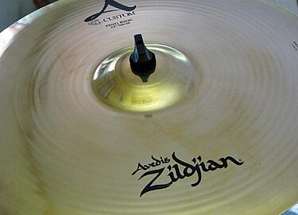

 A cymbal is a common percussion instrument. Often used in pairs, cymbals consist of thin, normally round plates of various alloys. The majority of cymbals are of indefinite pitch, although small disc-shaped cymbals based on ancient designs sound a definite note (such as crotales). Cymbals are used in many ensembles ranging from the orchestra, percussion ensembles, jazz bands, heavy metal bands, and marching groups. Drum kits usually incorporate at least a crash, ride, or crash/ride, and a pair of hi-hat cymbals. A player of cymbals is known as a cymbalist.
Cymbals have existed since ancient times. Representations of cymbals may be found in reliefs and paintings from Armenian Highlands (7th century BC), Larsa, Babylon, Assyria, ancient Egypt, ancient Greece, and ancient Rome. References to cymbals also appear throughout the Bible, through many Psalms and songs of praise to God. Cymbals may have been introduced to China from Central Asia in the 3rd or 4th century AD.
In India, cymbals have been in use since ancient times and are still used across almost all major temples and Buddhist sites. Gigantic aartis along the Ganges, which are revered by Hindus all over the world, are incomplete without large cymbals.
Mesopotamian cymbals from the 3rd millennium B.C. show that the large cymbal dates back into antiquity. The Shahnameh (circa 977 and 1010 CE) mentions the use of cymbals at least 14 times in its text, most in the context of creating a loud din in war, to frighten the enemy or to celebrate. The Persian word is sanj or senj (سنج), but the Shahnameh does not claim these to be Persian in origin. Several times it calls then "Indian cymbals." Other adjectives to describe them include "golden" and "brass," and to play them is to "clash" them.A different form is called sanj angshati (سنج انگشتی), these are zill.
Besides the original use in war, another use in Persian culture was the Ashura ceremony. Originally in the ceremony, two pieces of stone were beaten on the sides of the mourner with special movements accompanied by a lamentation song. This has been replaced by beating Karbzani or Karebzani and playing sanj and ratchets. Cities where this has been performed include Lahijan and Aran of Kashan, as well as Semnan and Sabzevar.
A crash cymbal is a type of cymbal that produces a loud, sharp "crash" sound and is mainly used for occasional accents in music. It's typically mounted on a stand and played with a drum stick, or by hand in pairs. Crash cymbals are a standard part of a drum kit and come in various sizes, generally ranging from 14 to 18 inches in diameter. They can be made from different alloys and thicknesses, which affect the sound they produce. Thicker cymbals are often used in heavier music genres like metal or rock, while thinner ones are preferred in lighter rock or jazz for their brighter sounds.
Crash cymbals are also susceptible to cracking, especially along the edge, due to repeated striking. This is more common with lower quality cymbals or those played with poor technique. Cracks can spread and potentially cause the cymbal to break if not addressed.
Crash cymbals evolved into the low-sock and from this to the modern hi-hat. Even in a modern drum kit, they remain paired with the bass drum as the two instruments which are played with the player's feet. However, hi-hat cymbals tend to be heavy with little taper, more similar to a ride cymbal than to a clash cymbal as found in a drum kit, and perform a ride rather than a crash function.
The ride cymbal is a staple in most drum kits, used to maintain a steady rhythm or beat. It’s characterized by a sustained, shimmering sound when struck, and a clear ping atop its bell. Commonly around 20 inches in diameter, ride cymbals vary in size and thickness, influencing their response to different music styles, from jazz to rock. They can also serve as crash cymbals in smaller setups.
Here's how cymbal sounds!!